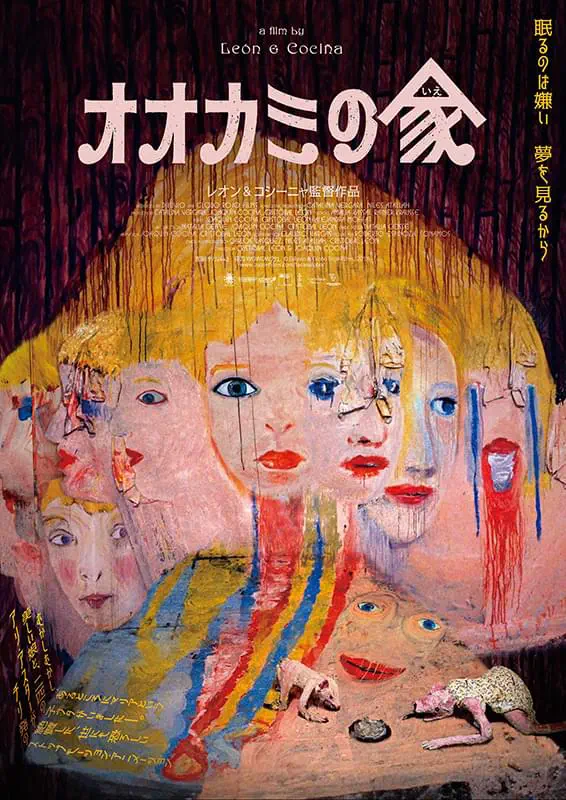
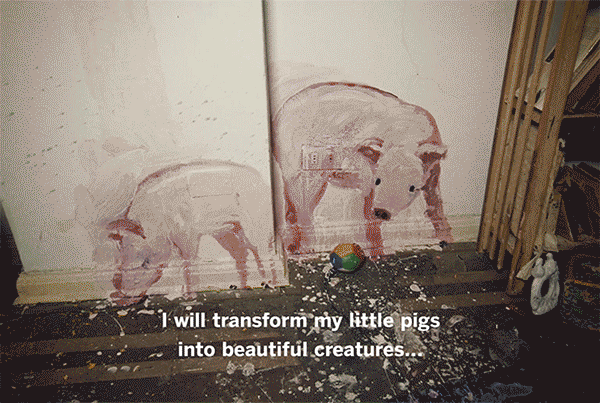
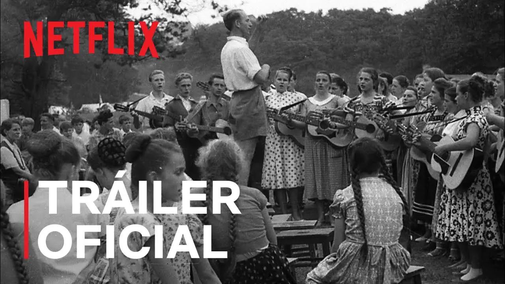
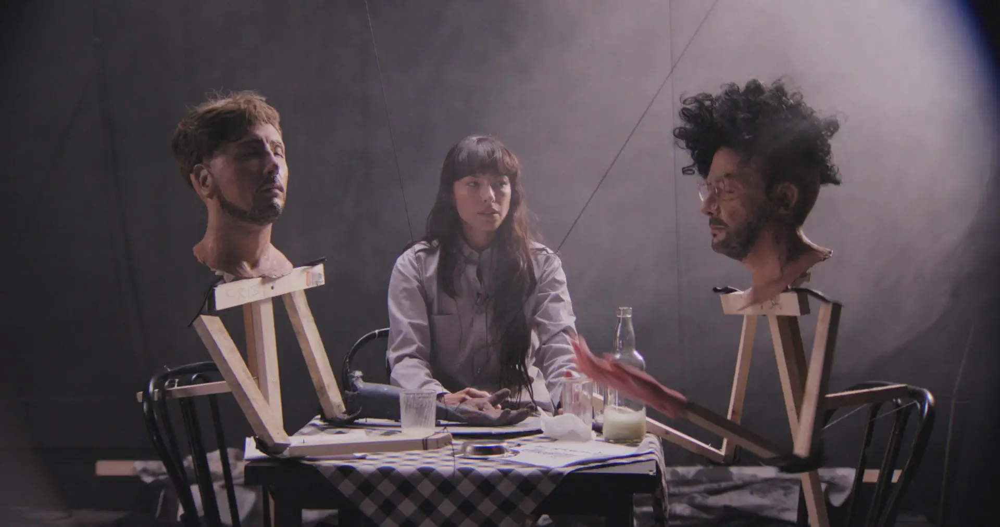
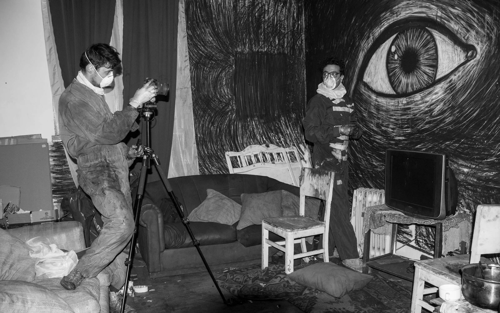

Vol.10 / Psychological Horror Special
オオカミの家：
変容し続ける等身大の悪夢
2026.01.21 UP

◎ 作者経歴：チリが生んだビジュアルアートの異才
クリストバル・レオンとホアキン・コシーニャは、共にチリ出身。アニメーションを美術展示（インスタレーション）の一環として捉える彼らの手法は、映画という枠組みを軽々と超えています。現代ホラーの鬼才アリ・アスターがその才能を絶賛し、自らプロデューサーを買って出たことでも知られています。

【Behind the Scenes】レオン＆コシーニャの制作プロセス
◎ 背景：カルト教団「コロニア・ディグニダ」
本作の恐怖の源泉は、実在したドイツ人入植地「コロニア・ディグニダ」にあります。児童虐待や拷問が行われていた閉鎖空間を、「幸福な村のプロパガンダ」として描き出す倒錯した構成。その歴史的闇を知ることで、壁の染み一つ一つが犠牲者の叫びのように見えてきます。
この施設は **1961年** に設立され、**2005年** に指導者パウル・シェーファーが逮捕されるまで、約40年以上にわたって存続しました。これほど長期間、法の手が及ばなかった背景には、当時の **ピノチェト軍事政権との密接な癒着** があります。教団施設は秘密警察の拷問センターとして提供され、見返りに政権から武器製造や政治的庇護を受けていました。外の世界から遮断された「国家の中の国家」という異常な環境が、悪夢のような悲劇を可能にしたのです。

【Background】作品のモチーフとなった実在のカルト教団施設
◎ 技術：等身大の「空間モーフィング」
彼らの技術は「1/1スケールの破壊と再生」です。実際の部屋の壁に油絵具で直接描き、数秒後にはそれを塗りつぶして次の一コマを撮る。この「上書き」の連鎖が、CGでは到達できない不気味な流動性と、歴史が塗り替えられる恐怖を物理的に表現しています。
◎ 関連作：『ハイパーボリア』と短編三部作
レオン＆コシーニャの最新長編『ハイパーボリア（Los Hiperbóreos）』は、実写とパペット、ドローイングがさらに高度に融合した怪作です。また、『Lucia』『Luis』といった初期短編は、『オオカミの家』へと繋がる「部屋に閉じ込められた子供たち」のモチーフを既に完成させていました。

【Related】最新作『ハイパーボリア』での実験的な視覚表現
◎ 今後の予定：世界を巡る「公開制作」の旅
彼らの制作スタイルは、美術館で観客に制作過程を公開しながら撮影を行う「公開制作」にあります。今後も世界各地のギャラリーをスタジオに変容させながら、新たな物語を紡いでいく予定です。デジタル時代において「場所」と「時間」を贅沢に使う彼らの手法は、アニメーションの未来に対する一つの回答となっています。

【Future】次なる悪夢の舞台となる美術館でのインスタレーション
◎ 深掘り：公式・紹介サイト
🔗 Diluvio - 制作スタジオ公式サイト（チリ）
制作の裏側や、レオン＆コシーニャのアーティストとしての全貌が把握できます。
🔗 日本語版公式サイト（ザジフィルムズ）
歴史的背景やアリ・アスターのコメントなど、日本独自の充実した解説が魅力。
🔍 Animeda! 視点：トラウマを物質化する暴力
この映画が恐ろしいのは、オオカミそのものではなく「部屋が変わってしまうこと」です。マリアが逃げ込んでも、壁が呼吸し、家具が牙を剥く。Vol.09のシュヴァンクマイエルが「物に宿る魂」を愛でたのに対し、レオン＆コシーニャは「物質の不安定さ」を使って、人間の精神が崩壊していく過程をえぐり出しました。これこそが、現代ストップモーションが到達した最果ての表現です。